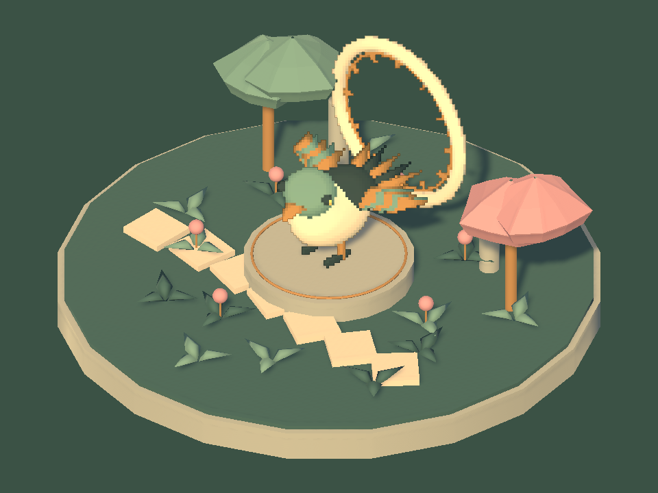
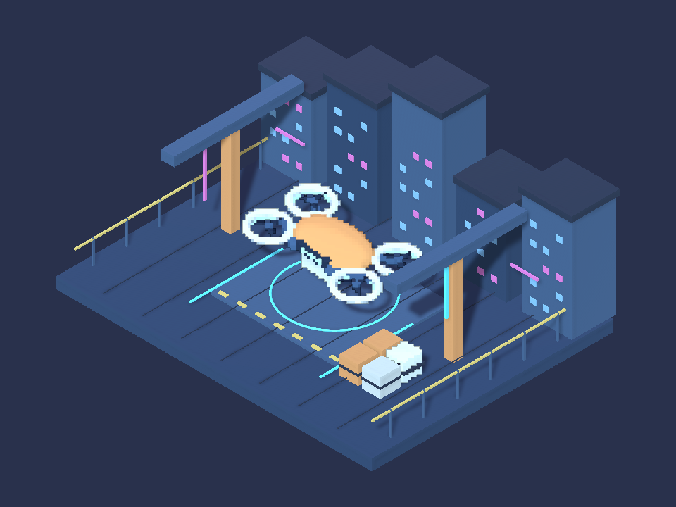
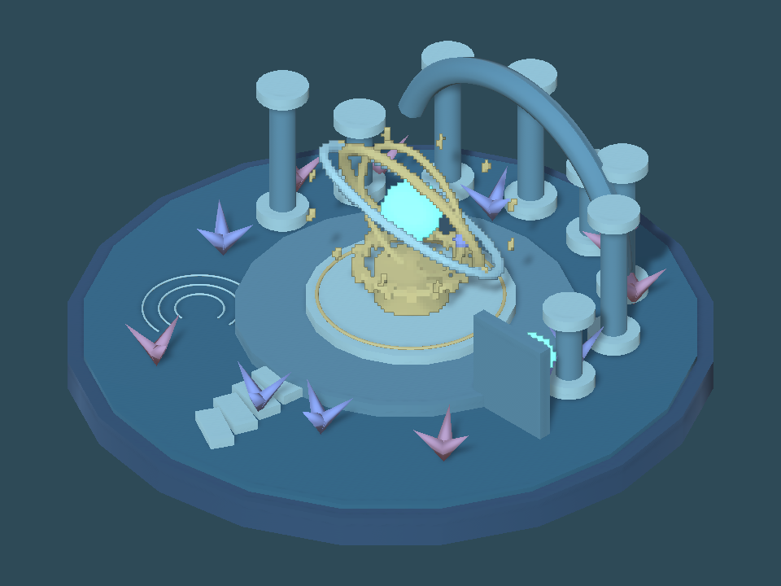

Tracefolio REPORTS & ISSUES
Tracefolio REPORTS & ISSUESPixora Studio 1.0.1 제출 대기 후보 확정
완료수정 패키지·9언어 변경 이력·심사 사유를 확정했습니다. 현재 Pending 제출은 그대로 유지하며 종료 후 사용할 후보입니다.
작업 결과
1.0.1 후보를 고정하고 공식 검증·새 Linear 프로젝트 설치·실제 렌더·샘플 제거 컴파일까지 완료했습니다. 현재 Pending 1.0.0의 온라인 초안·업로드·최종 제출은 변경하지 않았습니다.
변경 내용
적용 내용
Studio 버전1.0.1, Pixel Camera 버전0.6.2-preview. 기존3개 예제의 지정 타깃 전용 처리와 배경 보존, Undo/Redo 스크롤 유지, 설정 변경 즉시 미리보기, 수동 새로고침 제거를 포함합니다. 9언어 변경 이력과 영문 심사 사유873자를 Docs/Store/Pixora에 작성했습니다. 제출본과 수정 후보를 구분하며, Pending 종료 후 사용할 절차와 해시를 submission-ready.json에 기록했습니다.
검증
공식 validator 완료, 컴파일 오류 없음. 경고3개(Compressed Files, Line Endings, JPG Files)는 기록했습니다. 2794개 에셋 수출, 스테이징 대비 누락/변경0·개발 파일0, 통합 문서9언어 포함. 고정 SHA256 fa1fc9ae512068d1c9cfce1f85a5caa594e991d81002d4d6063fef9d59a0dd88, 65430931바이트. 새 프로젝트에 실제 .unitypackage를 가져와 Linear 색 공간에서 코어 로드를 확인했습니다. 새 설치의3씬×3프리셋 실제 렌더: 통과9, 비대상 변화0, 표면 윤곽선 좌우1px, 배경 의존0, 색 오차0. 샘플3종과 QA를 백업 이동한 후 본체6개 어셈블리 컴파일 통과, 샘플 어셈블리 미로드, 프로젝트 설정 해시 변화0. 모든 검증용 Unity는 정상 종료했습니다.



남은 사항
현재 Pending 종료 후 새 editable draft를 열어 버전1.0.1 지정 → 고정 파일 업로드 → 지원 언어 변경 이력·심사 사유 입력 → 저장·재열기·처리 파일 수 대조가 필요합니다. 제출 대기 준비 요청이므로 현재 심사에 영향을 줄 수 있는 새 초안을 미리 생성하지 않았습니다. 최종 소유권 선서와 제출은 실행하지 않았습니다. 최신 변경의 URP 회귀는 미실행이며 심사 사유에 명시했습니다. 첫 설치 검증기가 비동기 가져오기 완료 전에 종료한 실패를 보존하고, 실제 파일·어셈블리 준비를 기다리는 검증기로 재실행해 통과했습니다. 교훈: 비동기 설치 요청과 실제 완료를 구분하는 기존 지침 적용, 전역 변경 없음.
작업 시간
- 제안 시간: 10~15분
- 실제로 완료된 시간: 시작2026-11-06 02:14:57 KST. 후보·변경 이력·심사 사유·필수 검증·해시 인계 확정02:29:38 KST,14분42초. 중앙 보고서 배포 복구·공개 확인은 별도 진행 중.
- XERJ: 미사용 — 출시·검증 기록, 고정 파일과 실제 Unity 설치 결과 대조. 신규 코드 심볼 검색 불필요.